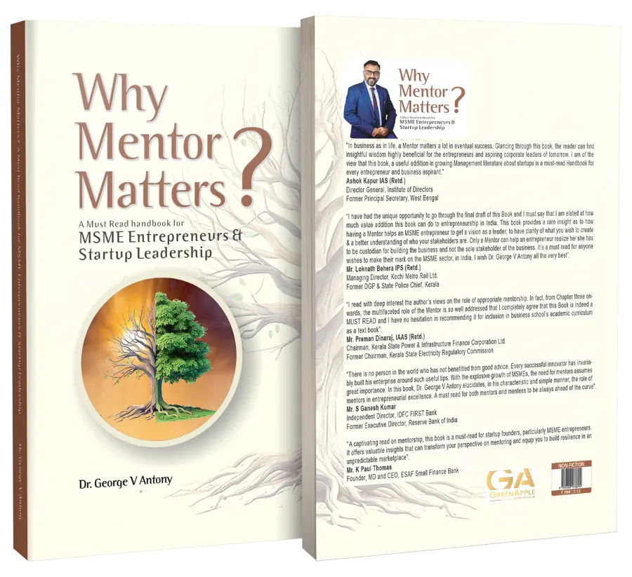

Guiding Vision. Enabling Execution. Accelerating Growth.
Enduring ventures are shaped by clarity of thought, quality of decisions, and disciplined execution. We partner with founders to translate ideas into structured, scalable enterprises—through rigorous thinking and experience-led guidance.
Acting as trusted advisors, we challenge assumptions, refine direction, and support founders through critical inflection points. From early validation to scale, the focus remains on building ventures with strong fundamentals and long-term viability.

A must-read handbook for MSME Entrepreneurs and Startup Leadership
A cornerstone of our mentoring philosophy. The book offers powerful insights into how the right guidance can accelerate learning, sharpen decision-making, and prevent costly missteps — a strategic guide for founders serious about building with clarity, confidence, and long-term impact.
Build your startup with clarity, confidence, and the right strategic foundation.
Connect for Consulting →A must-read handbook for MSME Entrepreneurs and Startup Leadership
By Dr. George V Antony
Officially released on June 28, 2025 by Union Minister Sushri Shobha Karandlaje, this handbook brings together decades of mentoring experience to help entrepreneurs and startup leaders navigate the realities of building enduring businesses in India.
Shri R. Venkataramani
Ld. Attorney General for India
Dr. Sandeep Marwah
Chancellor of AAFT University of Media and Arts
President of the International Chamber of Media & Entertainment Industry
Ashok Kapur IAS (Retd.)
Director General, Institute of Directors
Former Principal Secretary, West Bengal
Mr. Loknath Behera IPS (Retd.)
Managing Director, Kochi Metro Rail Ltd.
Former DGP & State Police Chief, Kerala
Mr. Preman Dinaraj, IAAS (Retd.)
Chairman, Kerala State Power & Infrastructure Finance Corporation Ltd.
Former Chairman, Kerala State Electricity Regulatory Commission
Mr. S Ganesh Kumar
Independent Director, IDFC FIRST Bank
Former Executive Director, Reserve Bank of India
Mr. K Paul Thomas
Founder, MD and CEO, ESAF Small Finance Bank
In management, it is often stated that you cannot spell SUCCESS without "U". The U Factor is predominantly important, especially in the entrepreneurial business environment, MSMEs and Startups in particular. The leadership shall not only have a strong passion to celebrate success, but also possess adequate awareness, knowledge and wisdom to integrate the environmental opportunities and organizational capabilities while navigating through the inherent and potential challenges.
My interaction with many MSME and Startup leadership revealed a shocking realization that majority of these organizations lack the U Factor effectiveness, which derails their journey towards success. This motivated me to bring out a text that fits to the context to empower the Startup and MSME Leadership to canvas their success story. Thus, Why Mentor Matters? A must-read handbook for MSME Entrepreneurs and Startup Leadership.
This short handbook portrays the unique enabling factor of having the Right Mentor for MSMEs and Startup organizations, whose astuteness and sapience intensify the efficiency and effectiveness of the enterprise to succeed and sustain. The book also throws light on the challenges faced by the MSMEs and Startups, and how mentor interventions help organizations in the mitigation and resilience process. One of the major challenges that the MSME Entrepreneurs and Startup Leadership face is identifying and aligning with the Right Mentor that suits their requirements. This dilemma has been addressed in this book, helping entrepreneurs to have clarity and direction while identifying and aligning with the Right Mentor. The discussions on Know Your Mentor (KYM) and Mentor Contribution Assessment & Review (MCAR) provides a simple configuration for the entrepreneurs to understand and review mentors' contribution to their enterprise and its resultant business impact.
The book Why Mentor Matters? A must-read handbook for MSME Entrepreneurs and Startup Leadership will serve as a reliable guide for Business owners, Entrepreneurs, Startup founders, Startup Aspirants and Academicians.
Dr. George V Antony